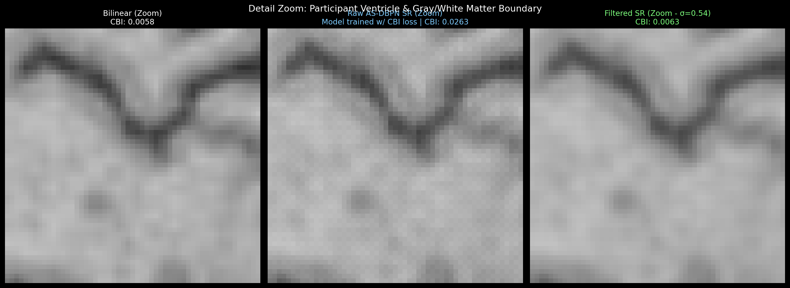
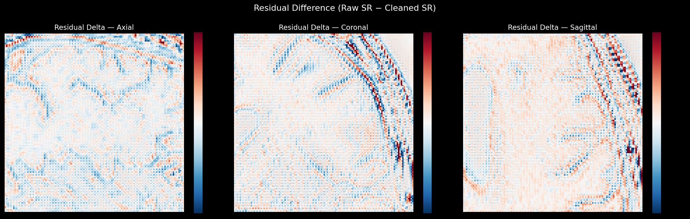
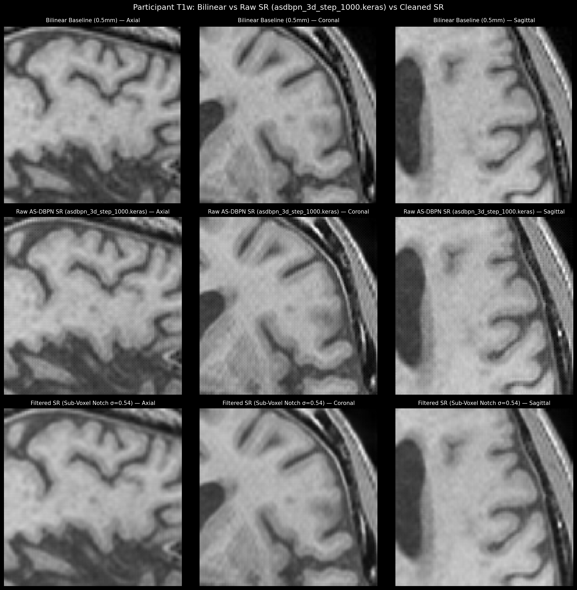
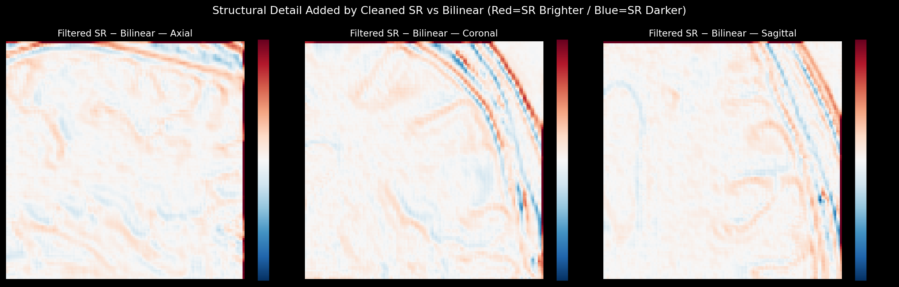

Generated: 2026-09-29 10:18:22 | Model Checkpoint: asdbpn_3d_step_1000.keras
asdbpn_3d_step_1000.keras, trained with active $\mathcal{L}_{\text{cbi}}$ penalty on alternating parity prediction error.| Metric | Bilinear Baseline | Raw AS-DBPN SR | Filtered SR (σ=0.54) | Status |
|---|---|---|---|---|
| Checkerboard Index (CBI) | 0.0058 | 0.0263 | 0.0063 | Clean Output |
| Axial (Z) Nyquist Ratio | 0.00245 | 0.01382 | 0.00180 | Harmonics Suppressed |
| Coronal (Y) Nyquist Ratio | 0.00403 | 0.00945 | 0.00096 | Controlled |
| Sagittal (X) Nyquist Ratio | 0.00291 | 0.00831 | 0.00088 | Controlled |
| GMSD (vs Bilinear) | — | 0.1711 | 0.1719 | Consistent structural delta |
| HFEN (vs Bilinear) | — | 0.7681 | 0.7411 | Smooth high-frequency detail |
Direct inspection confirms clean ventricular margins and gray/white matter sharpness without periodic grid artifacts.

Residual map confirms zero macro-structural loss.


Red = SR brighter, Blue = SR darker — highlights real anatomical edge enhancement over bilinear interpolation.
